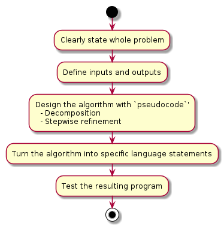

Introduction
Questions
What is the Purpose of Formalism in Computer Science?
What is software development life cycle
There seem to be many concepts in this course. What do they mean?
Objectives
We’ll give an introducton to the week
We’ll give some introduction to concepts used in the course
We’ll give some introduction to handy tools for the software developer
We’ll try to set up the mindset to find the rest of the week interesting and useful!
Instructor note
Lecture 30 min
Discussions 15 min
To be much shortened
What is software?
Wikipedia
set of computer programs and associated documentation and data.
This is in contrast to hardware, from which the system is built and which actually performs the work.
Application software
Most users think of compilers, databases, and other “system software” as applications.
User-written software: End-user development
Users create this software themselves and often overlook how important it is.
Depending on how competently the user-written software has been integrated into default application packages, many users may not be aware of the distinction between the original packages, and what has been added by co-workers.
Some concepts
program
script
tool
model
scripting vs programming
Python is an interpreted language. Python uses an interpreter to translate and run its code. Hence Python is a scripting language.
Programs written in C++ are compiled and then the compiled code runs to generate the output. C++ is thus a programming language and not a scripting language, since scripting languages are directly interpreted at run time and no prior compilation of the code takes place.
Note
We will not be very definite in the course in when to use scripting, program or tools
Outcome of a Program
Correct
and flawless
Efficient
Utilize the computer system’s resources
Reusable
Development costs
Finished components
Lower development costs
Faster
Higher quality
Requires general
packaging technology
Changeable
Maintenance cost
Fix errors, bugs
Adapt to new requirements
Independent modules
Encapsulation/information hiding
Functional vs. object-oriented programming
Object oriented programming
Object-oriented (OO) programming is
a mindset of mimicing the real-world as:
entities (
objects) that are differentor share attributes with each-other (within a
class)info-hiding mindset…
Functional programming is
more classical as it is more focused on the algorithms
keys are functions
modules: a way to gather functions with similar functionality)
Also other…
At its simplest, functional programming uses immutable data to tell the program exactly what to do. Object-oriented programming tells the program how to achieve results through objects altering the program’s state. Both paradigms can be used to create elegant code.
Note
More on Wednesday
Object-oriented (built-in classes)
C++
Java
Python
Julia
OO features
Fortran 2003
MATLAB
Perl
PHP
OO object-based (but not class-based)
Javascript
Your scripting/programming background (Oct 2022)
Python 86%
Bash 80%
R 42%
C++ 14%
FORTRAN 14%
C 12%
Julia 5%
JAVA 3.5%
Perl 3.5%
MATLAB 3.5 %
HTML 3.5%
Javascript 3.5 %
Rest 1 person each
AWK
PHP
Groovy
SQL
Different types of Scientific software:
analysis of data
statistics
figures
visualization
tools for process data
refining data (formatting)
bioinformatics
workflows
modelling (mimic the reality) - simulations time-varying bahvour of a system - mathematical models of relationships among variables in a system
decision assistance
Discussion
What experience have you had?
Use HackMD
Software Development Life Cycle (SDLC)
Basic models
waterfall
Requirements
Analysis and design
Development
Test
Development and maintenance
Spiral model: iterating waterfalls, quadrants
Planning: reqs, identification: analysis
Risk analysis: build prototypes to identify risks
Engineering: software implementation
Evaluation: stakeholder review, feedback, plan next iteration Each lab is new cycle: prototype –> RC –> Launch Risk driven
{kind=link}
Agile developing
Division of tasks into short phases of work and frequent reassessment and adaptation of plans.
Some common steps
Planning
Analysis and design
Development
Source control
Algorithms
Optimization
Parallelism
Test
Tests
Test-drive development
Development and maintenance
Documentation
Reproducibility and sharing
Iterations
More about life cycles in next session and Day 3
Parts from the life cycle models in this course
Day1 Intro
SDLC
Planning phase
Pseudocode and flowcharts
Source/version control
Collaboration
Reproducible research and sharing
Personal use to general use
Pependencies
Sharing
Licensing
Documentation
Day2 Algorithms+data structures
intro
storing
searching for things
sorting
BLAST
exercises
Day3 Paradigms: design patterns, modular code
How?
Programming paradigms
SDLC and the models for the development process
overview
Modular programming
design patterns introduction to element of reusable software modules
what is module
common interface design
Day4 TDD, testing
first look
types of tests
TDD in practice (afternoon )
Testing in Python with pytest
Automating testing with Github Actions
Putting it all together
“Advanced” topics
Day5 Optimization
Planning: Analysis and design
Note
“If I had nine hours to chop down a tree, I’d spend the first six sharpening my axe.
Modeling sharpens your axe since it helps you think about what you’re going to build, how to seek feedback, and where to make improvements. It prepares you to build the real thing to reduce any potential risk of failure. “
Note
Planning step is to …
get an overview of the project/program.
help planning writing the code
identify parts needed
Can be devided into analysis and design
Analysis part is to state the problem and define inputs and outputs
graphical tools like UML
text
objects in OOP
Design phase to find out the specific algorithms needed
pseudocode+UML
classes in OOP
functions/modules in functional programming
Top-down
Clearly state whole problem
Define inputs and outputs
Design the algorithm with
pseudocodeTurn the algorithm into specific language statements
Test the resulting program

Bottom-Up
Start with parts first and develop a bigger organization with time.
Discussion
How do you program? Put “o” on you choice
Top-down
Bottom-up
Flowcharts or Unified Modeling Language
Pseudocode
Example
algorithm ford-fulkerson is
input: Graph G with flow capacity c,
source node s,
sink node t
output: Flow f such that f is maximal from s to t
(Note that f(u,v) is the flow from node u to node v, and c(u,v) is the flow capacity from node u to node v)
for each edge (u, v) in GE do
f(u, v) ← 0
f(v, u) ← 0
while there exists a path p from s to t in the residual network Gf do
let cf be the flow capacity of the residual network Gf
cf(p) ← min{cf(u, v) | (u, v) in p}
for each edge (u, v) in p do
f(u, v) ← f(u, v) + cf(p)
f(v, u) ← −f(u, v)
return f
Objectives
Planning phase section aims to
Introduce flowcharts and UML expressions
Get into UML coding with PlantUML
Source/version control and collaboration
The essence of version control
Summarized from Code refinery
System which records snapshots of a project
Implements branching:
You can work on several feature branches and switch between them
Different people can work on the same code/project without interfering
You can experiment with an idea and discard it if it turns out to be a bad idea
Implements merging:
Person A and B’s simultaneous work can be easily combined
What we typically like to snapshot
Software (this is how it started but Git/GitHub can track a lot more)
Scripts
Documents (plain text files much better suitable than Word documents)
Manuscripts (Git is great for collaborating/sharing LaTeX or Quarto manuscripts)
Configuration files
Website sources
tool
Why version control
Roll-back functionality
Mistakes happen - without recorded snapshots you cannot easily undo mistakes and go back to a working version.
Branching
Often you need to work on several issues/features in one code - without branching this can be messy and confusing.
You can simulate branching by copying the entire code to multiple places but also this will be messy and confusing.
Collaboration
With version control, none of these are needed anymore (or have much simpler answers):
“I will just finish my work and then you can start with your changes.”
“Can you please send me the latest version?”
“You never got the code I send by email? Maybe the spam filter marked it as malicious?”
“Where is the latest version?”
“Which version are you using?”
“Which version have the authors used in the paper I am trying to reproduce?”
Reproducibility
How do you indicate which version of your code you have used in your paper?
When you find a bug, how do you know when precisely this bug was introduced (Are published results affected? Do you need to inform collaborators or users of your code?).
Compare with Dropbox or Google Drive
Document/code is in one place, no need to email snapshots.
How can you use an old version? Possible to get old versions but in a much less useful way - snapshots of files, not directories.
What if you want to work on multiple versions at the same time? Do you make a copy? How do you merge copies?
What if you don’t have internet?
Why Git?
We will use Git to record snapshots of our work:
Easy to set up: no server needed.
Very popular: chances are high you will need to contribute to somebody else’s code which is tracked with Git.
Distributed: good backup, no single point of failure, you can track and clean-up changes offline, simplifies collaboration model for open-source projects.
Important platforms such as GitHub, GitLab, and Bitbucket build on top of Git.
However, any version control is better than no version control and it is OK to prefer a different tool than Git.
Other tools:
Collaboration
Let’s say that someone has given you access to a repository online and you want to contribute to it.
It is quite easy to make a copy and send a change back.
First, we do this a relatively simple way: get repository, make a change locally, and send the change directly back.
Then, we make a “pull request” that allows a review.
Once we know how code review works, we will be able to propose changes to repositories of others and review changes submitted by external contributors.
Objectives
Collaboration aims to
Get into working more with GitHub for collaboration
Centralized workflow
Forking
Contributing to other’s projects
Reproducibility and sharing
Reproducible research
Have you ever spent days trying to repeat the results that took you hours to do the first time last week? - Or you have to do paper revisions, but you just can’t get the results to match up? Nothing is a worse feeling - either for you or for science itself.
In this lesson we will discuss different methods and tools for better reproducibility in research software and data. We will demonstrate how version control, workflows, containers, and package managers can be used to record reproducible environments and computational steps.
Objectives
Reproducibility and sharing aims to
Get a short overview of recording dependencies
Get short intro to tools:
Pip and PyPI
Conda
Environments
Tools for other languages than Python
Documentation
Note
Documentation comes in different forms - what is documentation?
Tutorials: learning-oriented, allows the newcomer to get started
How-to guides: goal-oriented, shows how to solve a specific problem
Explanation: understanding-oriented, explains a concept
Reference: information-oriented, describes the machinery Not to forget
Project documentation:
requirements: what is the goal of the software, risks, platforms the analysis: pseusocode and UML
risk analysis
There is no one size fits all: often for small projects a README.md or
README.rst can be enough (more about these formats later).
Objectives
Documentation aims to
Introduce motivation for documentation
Get tips for in-code documentation
Get tips for README files
Get tips for full documentation and tutorials
Testing
Does it work for all legal input data sets??
Unit testing
Integration tests
Typical testing process
Summary of Introduction
Now after the overview you are ready to dig deeper in the topics and try it out yourself!
Keypoints
Software development is both series of steps:
Requirements
Analysis and design
Development
Test
Development and maintenance
… and iteration of these
Planning for reproducibility, modularity and documentation should be started in the beginning
Tools for the developer
Planning: UML and pseudocode
Development iteration: git
Testing: test functions (Covered on Thursday)
Collaboration: GitHub, licenses, citation
Documentation: READMEs and e.g. sphinx